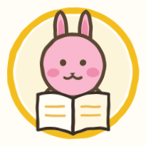
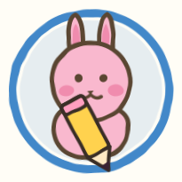
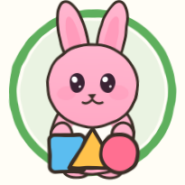
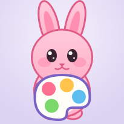
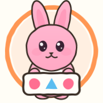

🌈 은아와 서하의 놀이터

📚 배우기
▾
🌟
한글 놀이터
🗣️
영어 놀이터
🌸
일본어 놀이터
🔢
산수 놀이터
🛒
시장 놀이터
🧩
픽셀 놀이터
🎙️
프랙티카 놀이터

✏️ 그리기와 쓰기
▾
✍️
글씨 놀이터
✏️
선 따라 그리기
🎨
색칠공부

🔷 모양 만들기
▾
🔷
도형 놀이터
🌈
무지개 탱그램
📌
지오보드
🥤
컵 쌓기

🌈 색 맞추기
▾
🧪
색깔 실험실
🔵
구슬 보드
💍
손가락 고무줄
⚗️
시험관 구슬
🔴
네 색 슬라이드

🔁 순서와 규칙
▾
🍔
햄버거 가게
🍢
꼬치 가게
🔁
패턴 놀이터
✏️
점 잇기
👀 찾기와 짝맞추기
▾
🔍
찾기 놀이터
🎲
동물 주사위
🍩
도넛 짝맞추기
🎡
돌림 블록
🧭
방향·색 놀이터
💡
생각 놀이터
🔑 부모님 페이지